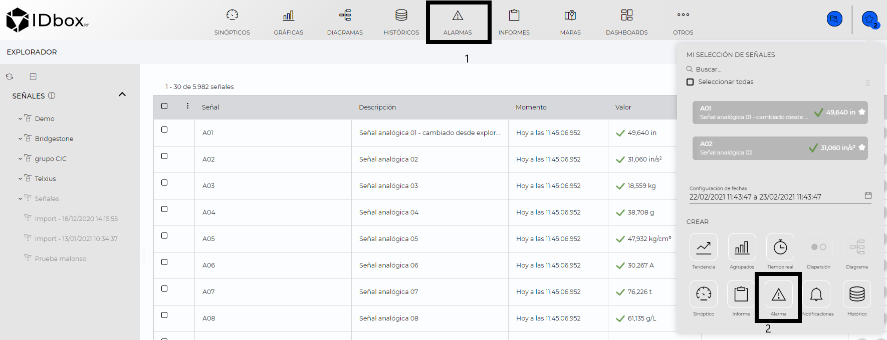

Alarms
1. Introduction
From the alarms document we will be able to visualize the alarms occurred in the system, allowing to apply a basic filtering of the alarms that we want to visualize.
Alarm documents can be created from the launcher (1) or from the shortcut (2).

1) Clicking on the alarm shortcut will open the wizard to create a new alarm document, in which we can select the signals to filter and the range of dates to display, it should be noted that to create a new alarm document it is not necessary to select any signal, the signals with which we create the alarm document will be applied to the basic filtering, so that only the alarms of these signals will be displayed.
- Signals We can select the signals on which we want to consult the alarms, in case we do not select any signal, the alarms of the whole system will be displayed.
- Dates configuration: Allows you to select the time interval for which the data will be displayed. You can type the dates in the text field or click on the calendar (2) to open the date selector.
Once the initial configuration is set, the configured graph will be displayed on the screen. The central area, the graphical representation corresponds to the previously selected configuration, type of graph, dates and series.
2) To create an alarm document from the launcher just click on the alarms icon and a new alarm document will be created, as in the wizard it is not mandatory to select a signal to create an alarm document.
Once the alarm document is created, in the central part we can visualize the time, duration, description of the signal that generated the alarm and if it has been recognized by any user. On the right side of the document we have the basic filtering panel that will allow us to exclude the alarms to be displayed.

2 Alarm display.
There are two possible actions that can be performed from the alarm display:
1) Start/Pause real time: Allows you to stop or resume the real-time listing of alarms. 2) Acknowledge alarms: By selecting one or more items from the list and clicking on acknowledge alarms .When the alarm is acknowledged, the Ack field is activated as “true”,indicating that this alarm has already been attended and in the user field (Ack User) who acknowledged the alarm.

The following fields are shown in the data table: 1) Time: Time at which the alarm occurred. 2) Severity: Severity level of the alarm. 3) Duration: Duration of the alarm, in case the alarm is still active, “Active” will be displayed. 4) Signal: Signal associated with the alarm. 5) Description: Description associated to the alarm configuration. 6) Ack: Indicates whether the alarm has been acknowledged. 7) Ack user: Displays the user who has acknowledged the alarm.
3 Basic alarm filtering
In the basic alarm filtering panel, we can establish a series of filters, so that only the alarms that comply with the established filters will be displayed.

The following filters are available: 1)Signals: We will only display the alarms of signals entered, in case we have not entered any signal, “All signals” will be displayed. 2)Dates configuration: Allows to select the time interval for which the data will be displayed. Dates can be typed in the text field or click on the calendar (1) to open the date selector. 3)Severity: Severity level we wish to display, by default “No filter” appears selected, therefore we will display alarms with all criticality levels. 4)Active: Indicates whether we wish to display only alarms, active, deactivated or both. 5)Acknowledged: Indicates whether we wish to display only alarms that are unacknowledged, pending acknowledgement or both. 6)Duration: Allows the possibility of filtering the alarms by their duration, indicating a minimum and maximum duration.